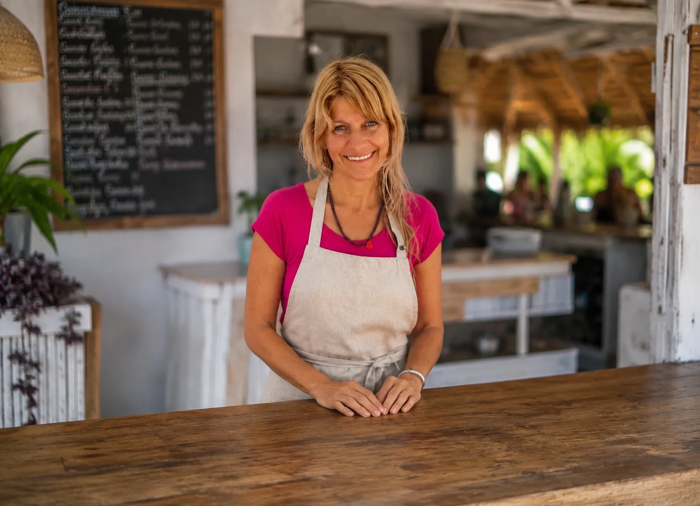

Un servicio de análisis y rediseño de menú pensado para mejorar la rentabilidad y construir una experiencia más alineada con las nuevas necesidades del consumidor.
Muchos negocios gastronómicos venden bien, pero toman decisiones basadas en intuición. Transformamos la información diaria de tu operación en indicadores claros para controlar costos y aumentar la rentabilidad.
Diseñamos propuestas gastronómicas donde cada detalle —desde el concepto de negocio hasta la experiencia del cliente— trabaja para diferenciar tu marca y elevar el valor percibido.
Estoy aquí para ofrecerte años de experiencia en el rubro gastronómico-hotelero apoyada por una larga trayectoria en contaduría, cocina y wellness. Recorrí gran parte del mundo y culturas clave, Europa, Asia y América Central por lo cual conozco la diversidad de los climas, realidades sociales y culturales que el mundo puede ofrecer.